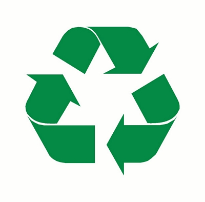

Definição de Sustentabilidade
A palavra sustentabilidade vem do latim sustentare, e significa sustentar, conservar, apoiar, cuidar. Sustentabilidade é suprir as necessidades do presente sem comprometer a capacidade das gerações futuras de satisfazerem as suas próprias necessidades (ONU, 1987).
Histórico da Sustentabilidade
O conceito de sustentabilidade ganhou destaque mundial após a Conferência de Estocolmo em 1972, quando as preocupações ambientais começaram a ser discutidas em escala global. O Relatório Brundtland de 1987 consolidou a definição que utilizamos até hoje.
Marcos importantes:
- 1972 - Conferência de Estocolmo sobre Meio Ambiente
- 1987 - Relatório Brundtland
- 1992 - Rio-92 e Agenda 21
- 2015 - Objetivos de Desenvolvimento Sustentável da ONU
Tripé da Sustentabilidade
A sustentabilidade é tratada por meio de três dimensões que indicam um equilíbrio harmonioso entre as esferas social, ambiental e econômica. Esse tripé corresponde a uma tendência das empresas que passaram a se comprometer com a sustentabilidade.
Sustentabilidade Social
Refere-se à promoção do bem-estar social e à garantia de direitos humanos, buscando a equidade e a justiça social.
Sustentabilidade Ambiental
Relaciona-se com a preservação dos ecossistemas, a conservação da biodiversidade e o uso responsável dos recursos naturais.
Sustentabilidade Econômica
Busca garantir a viabilidade econômica das atividades humanas, promovendo o desenvolvimento sustentável e a responsabilidade corporativa.
Desafios Ambientais Atuais
O planeta enfrenta diversos desafios ambientais que tornam a sustentabilidade uma urgência global. Entre os principais problemas estão as mudanças climáticas, a perda de biodiversidade e a escassez de recursos naturais.
Principais problemas ambientais:
- Aquecimento global e mudanças climáticas
- Desmatamento e perda de habitat
- Poluição do ar, água e solo
- Extinção de espécies
- Esgotamento de recursos naturais
Reciclagem - Definição
A reciclagem é o processo de coletar materiais que seriam descartados e transformá-los em novos produtos.
Exemplos da relação entre sustentabilidade e reciclagem:
- Redução do consumo de recursos naturais
- Minimização da geração de resíduos
- Diminuição da Poluição
- Economia e Geração de Empregos
Tipos de Reciclagem
Existem diferentes tipos de reciclagem, cada um adequado para materiais específicos. Conhecer esses processos é fundamental para uma participação efetiva na preservação ambiental.
Reciclagem de Papel
Processo que transforma papel usado em novos produtos, economizando árvores e reduzindo o consumo de água e energia.
Reciclagem de Plástico
Transformação de resíduos plásticos em novos materiais, reduzindo a poluição e o tempo de decomposição no ambiente.
Reciclagem de Metal
Reprocessamento de metais como alumínio e ferro, economizando energia e recursos minerais.
Coleta Seletiva na Reciclagem
Um dos pilares do consumo sustentável é a coleta seletiva, que consiste na separação dos materiais recicláveis dos resíduos comuns, facilitando o processo de reciclagem. Os resíduos são separados em categorias, representadas por meio de cores para cada tipo de resíduo, e então são encaminhados para tratamento adequado, como reciclagem ou compostagem. Portanto, é uma prática essencial para a gestão eficiente de resíduos e a preservação do meio ambiente.
As lixeiras de reciclagem são identificadas por cores específicas:
- Vermelho para plástico
- Azul para papel
- Verde para vidro
- Marrom para orgânico
- Amarelo para metal
Como Praticar a Sustentabilidade no Dia a Dia
Pequenas ações individuais podem gerar um grande impacto coletivo. A sustentabilidade começa com mudanças de hábitos simples que qualquer pessoa pode adotar.
Dicas práticas:
- Reduza o consumo de água e energia
- Separe corretamente os resíduos para reciclagem
- Prefira produtos com embalagens recicláveis
- Use transporte público ou bicicleta
- Consuma produtos locais e orgânicos
- Evite o desperdício de alimentos
- Reutilize materiais sempre que possível
Sustentabilidade nas Empresas
As empresas têm um papel fundamental na promoção da sustentabilidade. Muitas organizações já adotam práticas sustentáveis como parte de sua responsabilidade social corporativa.
Práticas empresariais sustentáveis:
- Uso de energias renováveis
- Programas de redução de resíduos
- Certificações ambientais
- Produtos eco-friendly
- Logística reversa
O Futuro da Sustentabilidade
O futuro sustentável depende da integração de tecnologias limpas, políticas públicas eficazes e mudanças comportamentais. A economia circular emerge como um modelo promissor para substituir o modelo linear de produção e consumo.
As próximas décadas serão decisivas para determinar se conseguiremos alcançar os Objetivos de Desenvolvimento Sustentável estabelecidos pela ONU para 2030, garantindo um planeta habitável para as futuras gerações.